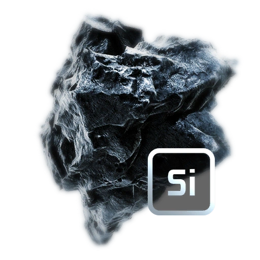
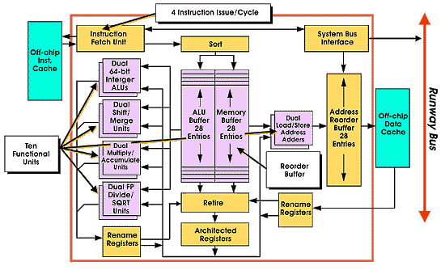

Из чего делается процессор?
Почти все процессоры, которые производятся в мире, делаются на кремниевой основе. Это связано с тем, что у кремния подходящая внутренняя атомная структура, которая позволяет делать микросхемы и процессоры практически любой конфигурации.
Как устроен процессор?
Процессор это комплекс нанометровых технологий работающих совместно для выполнения разного рода вычеслений.
